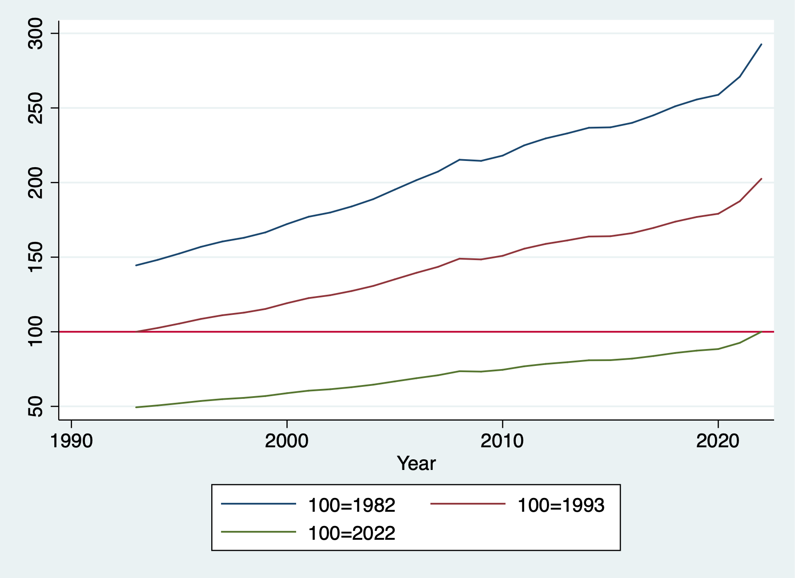

Chapter 4 Processing observations across subgroups
One thing Stata easily provides are commands and options for subgroup analysis. We can use the by prefix command to create and analyze subgroups or cross-sectional units in a panel data set.
4.1 Obtaining separate results for subgroups
Tabulate is a very helpful command to analyze categorical variables, or occassionally look through continuous variables (as long as there aren’t too many values).
The tabulate command has an option to summarize a continuous variable when tabulating categorical variables.
/Users/Sam/Desktop/Econ 645/Data/Mitchell
(Working Women Survey w/fixes)
| Summary of hourly wage
married | Mean Std. Dev. Freq.
------------+------------------------------------
0 | 8.0920006 6.354849 804
1 | 7.6319496 5.5017864 1,440
------------+------------------------------------
Total | 7.7967807 5.8245895 2,244Another option is using the bysort prefix command.
-> married = 0
Variable | Obs Mean Std. Dev. Min Max
-------------+---------------------------------------------------------
wage | 804 8.092001 6.354849 0 40.19808
------------------------------------------------------------------------------------------------------------------
-> married = 1
Variable | Obs Mean Std. Dev. Min Max
-------------+---------------------------------------------------------
wage | 1,440 7.63195 5.501786 1.004952 40.74659We can also correlate data within groups instead of using qualifiers and additional statements.
With qualifiers
(obs=804)
| wage age
-------------+------------------
wage | 1.0000
age | -0.0185 1.0000
(obs=1,440)
| wage age
-------------+------------------
wage | 1.0000
age | 0.0049 1.0000Using bysort accomplishes this in one command
-> married = 0
(obs=804)
| wage age
-------------+------------------
wage | 1.0000
age | -0.0185 1.0000
------------------------------------------------------------------------------------------------------------------
-> married = 1
(obs=1,440)
| wage age
-------------+------------------
wage | 1.0000
age | 0.0049 1.0000Using bysort accomplishes even faster if we have a categorical variable with many categories
-> race = 1
(obs=1,637)
| wage age
-------------+------------------
wage | 1.0000
age | 0.0017 1.0000
------------------------------------------------------------------------------------------------------------------
-> race = 2
(obs=581)
| wage age
-------------+------------------
wage | 1.0000
age | -0.0331 1.0000
------------------------------------------------------------------------------------------------------------------
-> race = 3
(obs=26)
| wage age
-------------+------------------
wage | 1.0000
age | -0.2194 1.00004.2 Computing values separately by subgroups
The by prefix command and the egen command is a powerful combination that makes aggregating group statistics much easier than other statistical software packages
Bysort and egen makes aggregating by groups much easier than other software. R has aggregate which is flexible and powerful, but requires more coding compared to egen.
I’m not the biggest fan of Mitchell’s examples with bysort var: egen, but they get the job done. I would like us to use some CPS examples with bysort and egen.
With bysort var: egen we can calculate subgroup statistics, counts, summations with one easy line of code
/Users/Sam/Desktop/Econ 645/Data/Mitchell
+--------------------------------------------+
| kidid dt female wt tv vac |
|--------------------------------------------|
1. | 1 07jan2002 1 53 1 1 |
2. | 1 08jan2002 1 55 3 1 |
|--------------------------------------------|
3. | 2 16jan2002 1 58 8 1 |
|--------------------------------------------|
4. | 3 18jan2002 0 60 2 0 |
5. | 3 19jan2002 0 63 5 1 |
6. | 3 21jan2002 0 66 1 1 |
7. | 3 22jan2002 0 64 6 0 |
|--------------------------------------------|
8. | 4 10jan2002 1 62 7 0 |
9. | 4 11jan2002 1 58 1 0 |
10. | 4 13jan2002 1 55 4 0 |
+--------------------------------------------+If we want to calculate the average tv time for each kid we first sort by the child id and then use egen. We may have multiple levels and we can use bysort to find the multiple level identifiers such as id, year, and month of year.
| kidid tv avgtv |
|--------------------|
1. | 1 1 2 |
2. | 1 3 2 |
|--------------------|
3. | 2 8 8 |
|--------------------|
4. | 3 2 3.5 |
5. | 3 5 3.5 |
6. | 3 1 3.5 |
7. | 3 6 3.5 |
|--------------------|
8. | 4 7 4 |
9. | 4 1 4 |
10. | 4 4 4 |
+--------------------+If we want the standard deviation of the child’s tv watching.Let’s generate some z-scores and look at the statistics.
(1 missing value generated)
(1 missing value generated)
+-----------------------------------------------------------------------------+
| kidid dt female wt tv vac avgtv sdtv ztv |
|-----------------------------------------------------------------------------|
1. | 1 07jan2002 1 53 1 1 2 1.4142136 -.70710678 |
2. | 1 08jan2002 1 55 3 1 2 1.4142136 .70710678 |
3. | 2 16jan2002 1 58 8 1 8 . . |
4. | 3 18jan2002 0 60 2 0 3.5 2.3804761 -.63012604 |
5. | 3 19jan2002 0 63 5 1 3.5 2.3804761 .63012604 |
|-----------------------------------------------------------------------------|
6. | 3 21jan2002 0 66 1 1 3.5 2.3804761 -1.0502101 |
7. | 3 22jan2002 0 64 6 0 3.5 2.3804761 1.0502101 |
8. | 4 10jan2002 1 62 7 0 4 3 1 |
9. | 4 11jan2002 1 58 1 0 4 3 -1 |
10. | 4 13jan2002 1 55 4 0 4 3 0 |
+-----------------------------------------------------------------------------+Let’s generate some subgroup statistics for a binary variable vac. Where vac=0 if the kid was not on vacation and vac=1 if the kid was on vacation.
bysort kidid: egen vac_total = total(vac)
bysort kidid: egen vac_sd = sd(vac)
bysort kidid: egen vac_min = min(vac)
bysort kidid: egen vac_max = max(vac)
list kidid vac*, sepby(kidid) abb(10)(1 missing value generated)
+---------------------------------------------------------+
| kidid vac vac_total vac_sd vac_min vac_max |
|---------------------------------------------------------|
1. | 1 1 2 0 1 1 |
2. | 1 1 2 0 1 1 |
|---------------------------------------------------------|
3. | 2 1 1 . 1 1 |
|---------------------------------------------------------|
4. | 3 0 2 .57735027 0 1 |
5. | 3 1 2 .57735027 0 1 |
6. | 3 1 2 .57735027 0 1 |
7. | 3 0 2 .57735027 0 1 |
|---------------------------------------------------------|
8. | 4 0 0 0 0 0 |
9. | 4 0 0 0 0 0 |
10. | 4 0 0 0 0 0 |
+---------------------------------------------------------+Let’s see if some kids watch less than 4 hours of tv per day. We’ll generate a binary/dummy variable to be 1 if equal to or less than 4 hours a day and 0 if it is greater than 4 hours a day.
We can generate individual level subgroup analysis with bysort and egen on binary variables
bysort kidid: egen tvlocnt = count(tvlo)
bysort kidid: egen tvlototal = total(tvlo)
bysort kidid: egen tvlosum = sum(tvlo)
bysort kidid: gen tvlosum2 = sum(tvlo)
bysort kidid: egen tvlosame = sd(tvlo)
bysort kidid: egen tvloall = min(tvlo)
bysort kidid: egen tvloever = max(tvlo)
list kidid tv tvlo*, sepby(kidid) abb(20)(1 missing value generated)
+-----------------------------------------------------------------------------------------------+
| kidid tv tvlo tvlocnt tvlototal tvlosum tvlosum2 tvlosame tvloall tvloever |
|-----------------------------------------------------------------------------------------------|
1. | 1 1 1 2 2 2 1 0 1 1 |
2. | 1 3 1 2 2 2 2 0 1 1 |
|-----------------------------------------------------------------------------------------------|
3. | 2 8 0 1 0 0 0 . 0 0 |
|-----------------------------------------------------------------------------------------------|
4. | 3 2 1 4 2 2 1 .57735027 0 1 |
5. | 3 5 0 4 2 2 1 .57735027 0 1 |
6. | 3 1 1 4 2 2 2 .57735027 0 1 |
7. | 3 6 0 4 2 2 2 .57735027 0 1 |
|-----------------------------------------------------------------------------------------------|
8. | 4 7 0 3 1 1 0 .57735027 0 1 |
9. | 4 1 1 3 1 1 1 .57735027 0 1 |
10. | 4 4 0 3 1 1 1 .57735027 0 1 |
+-----------------------------------------------------------------------------------------------+Notice how count() provides the number of observations for each kid, while total() returns a constant for the sum of all values, but so does egen sum(). The problem is that there is a gen var = sum(var2) function that returns a running sum that we see in tvsum2. Use egen sum with caution if you want a cumulative sum. If you want a cumulative sum use egen total().
We have our central tendencies functions with
- mean(),
- median(),
- mode().
We can find percentiles with
- pctile(var), p(#).
We have other egen functions that may be of help, such as
- Interquartile Range iqr(),
- Median Absolute Deviation mad(),
- Mean Absolute Deviation mdev(),
- Kurtosis kurt()
- Skewness skew().
- Other functions
Mitchell has a good note here:
Egen mean() takes an arguement, not a varlist, so if you put bysort idvar: egen meanvars1_5=mean(var1-var5), mean() will return not the means of vars 1 through 5, but var1 minus var5.
4.3 Subscripting or Indexing: Computing values within subgroups:
Unsolicated Opinion Alert: Subscripting (or I may accidently call it indexing) is a very powerful tool that I personally think puts Stata as the top paid statistical software (I do think that R is more powerful and more flexible, but Stata balances power, flexibility, and ease of learning).
Each variable is a vector x1=x[x11, x12, x13,…,x1N] for i=1,…,N observations We can use a subscript or index to call which part of the vector we want to return.
/Users/Sam/Desktop/Econ 645/Data/Mitchell
+--------------------------------------------+
| kidid dt female wt tv vac |
|--------------------------------------------|
1. | 1 07jan2002 1 53 1 1 |
2. | 1 08jan2002 1 55 3 1 |
|--------------------------------------------|
3. | 2 16jan2002 1 58 8 1 |
|--------------------------------------------|
4. | 3 18jan2002 0 60 2 0 |
5. | 3 19jan2002 0 63 5 1 |
6. | 3 21jan2002 0 66 1 1 |
7. | 3 22jan2002 0 64 6 0 |
|--------------------------------------------|
8. | 4 10jan2002 1 62 7 0 |
9. | 4 11jan2002 1 58 1 0 |
10. | 4 13jan2002 1 55 4 0 |
+--------------------------------------------+If we want the first observation in our tv vector we can call it with [1]
1We can look at the first kid id and date and time
kid: 1, Date: 15347, Sex: 1, TV Hours: 1We can see the second observation
3We can see the difference between the two observations
2Note: we have some very useful system variables of _N and _n _N is total number of observations and when used in the subscript/index it will return the last observation
_n is current number of observations or observation number and when used in the subscript/index it will return the current observation (almost like i=i+1)
Subscripting is very helpful when working Panel Data. You can index within cross-sectional units over time with ease. The subscript (or index) will return the nth observation given
If we want the first observation to be compared to all observations
cd "/Users/Sam/Desktop/Econ 645/Data/Mitchell"
use tv1, clear
bysort kidid: gen tv_1ob = tv[1]
list kidid tv tv_1ob, sepby(kidid)/Users/Sam/Desktop/Econ 645/Data/Mitchell
+---------------------+
| kidid tv tv_1ob |
|---------------------|
1. | 1 1 1 |
2. | 1 3 1 |
|---------------------|
3. | 2 8 8 |
|---------------------|
4. | 3 2 2 |
5. | 3 5 2 |
6. | 3 1 2 |
7. | 3 6 2 |
|---------------------|
8. | 4 7 7 |
9. | 4 1 7 |
10. | 4 4 7 |
+---------------------+If we want to compare the last observation to all observations
| kidid tv tv_las~b |
|-----------------------|
1. | 1 1 3 |
2. | 1 3 3 |
|-----------------------|
3. | 2 8 8 |
|-----------------------|
4. | 3 2 6 |
5. | 3 5 6 |
6. | 3 1 6 |
7. | 3 6 6 |
|-----------------------|
8. | 4 7 4 |
9. | 4 1 4 |
10. | 4 4 4 |
+-----------------------+If we want the second to last observation
(1 missing value generated)
+-----------------------+
| kidid tv tv_2to~b |
|-----------------------|
1. | 1 1 1 |
2. | 1 3 1 |
|-----------------------|
3. | 2 8 . |
|-----------------------|
4. | 3 2 1 |
5. | 3 5 1 |
6. | 3 1 1 |
7. | 3 6 1 |
|-----------------------|
8. | 4 7 1 |
9. | 4 1 1 |
10. | 4 4 1 |
+-----------------------+If we want the prior observation (lag of 1)
(4 missing values generated)
+-----------------------+
| kidid tv tv_lagob |
|-----------------------|
1. | 1 1 . |
2. | 1 3 1 |
|-----------------------|
3. | 2 8 . |
|-----------------------|
4. | 3 2 . |
5. | 3 5 2 |
6. | 3 1 5 |
7. | 3 6 1 |
|-----------------------|
8. | 4 7 . |
9. | 4 1 7 |
10. | 4 4 1 |
+-----------------------+If we want the next observation (lead of 1)
(4 missing values generated)
+-----------------------+
| kidid tv tv_lea~b |
|-----------------------|
1. | 1 1 3 |
2. | 1 3 . |
|-----------------------|
3. | 2 8 . |
|-----------------------|
4. | 3 2 5 |
5. | 3 5 1 |
6. | 3 1 6 |
7. | 3 6 . |
|-----------------------|
8. | 4 7 1 |
9. | 4 1 4 |
10. | 4 4 . |
+-----------------------+You can use bysort kidid (dt) to tell Stata to order by kid id and date, but NOT INCLUDE dt in the grouping.
If we use kidid AND tv bysort kidid tv: egen, then we will look for observation Within kid id AND the date. Since there is only 1 observation per kid per date, we will only have 1 observation for each grouping. If we want the first observation to be compared to all observations
cd "/Users/Sam/Desktop/Econ 645/Data/Mitchell"
use tv1, clear
bysort kidid (dt): gen tv_1ob1 = tv[1]
bysort kidid dt: gen tv_1ob2 = tv[1]
list kidid tv tv_1ob*, sepby(kidid)/Users/Sam/Desktop/Econ 645/Data/Mitchell
+--------------------------------+
| kidid tv tv_1ob1 tv_1ob2 |
|--------------------------------|
1. | 1 1 1 1 |
2. | 1 3 1 3 |
|--------------------------------|
3. | 2 8 8 8 |
|--------------------------------|
4. | 3 2 2 2 |
5. | 3 5 2 5 |
6. | 3 1 2 1 |
7. | 3 6 2 6 |
|--------------------------------|
8. | 4 7 7 7 |
9. | 4 1 7 1 |
10. | 4 4 7 4 |
+--------------------------------+If we want to compare the last observation to all observations
bysort kidid (dt): gen tv_lastob1 = tv[_N]
bysort kidid dt: gen tv_lastob2 = tv[_N]
list kidid tv tv_lastob*, sepby(kidid) | kidid tv tv_las~1 tv_las~2 |
|----------------------------------|
1. | 1 1 3 1 |
2. | 1 3 3 3 |
|----------------------------------|
3. | 2 8 8 8 |
|----------------------------------|
4. | 3 2 6 2 |
5. | 3 5 6 5 |
6. | 3 1 6 1 |
7. | 3 6 6 6 |
|----------------------------------|
8. | 4 7 4 7 |
9. | 4 1 4 1 |
10. | 4 4 4 4 |
+----------------------------------+If we want the prior observation (lag of 1)
bysort kidid (dt): gen tv_lagob1 = tv[_n-1]
bysort kidid dt: gen tv_lagob2 = tv[_n-1]
list kidid tv tv_lagob*, sepby(kidid)quietly {
cd "/Users/Sam/Desktop/Econ 645/Data/Mitchell"
use tv1, clear
bysort kidid (dt): gen tv_1ob1 = tv[1]
bysort kidid dt: gen tv_1ob2 = tv[1]
bysort kidid (dt): gen tv_lastob1 = tv[_N]
bysort kidid dt: gen tv_lastob2 = tv[_N]
}
bysort kidid (dt): gen tv_lagob1 = tv[_n-1]
bysort kidid dt: gen tv_lagob2 = tv[_n-1]
list kidid tv tv_lagob*, sepby(kidid)(4 missing values generated)
(10 missing values generated)
+----------------------------------+
| kidid tv tv_lag~1 tv_lag~2 |
|----------------------------------|
1. | 1 1 . . |
2. | 1 3 1 . |
|----------------------------------|
3. | 2 8 . . |
|----------------------------------|
4. | 3 2 . . |
5. | 3 5 2 . |
6. | 3 1 5 . |
7. | 3 6 1 . |
|----------------------------------|
8. | 4 7 . . |
9. | 4 1 7 . |
10. | 4 4 1 . |
+----------------------------------+4.4 Computing values within subgroups: Computations across observations
Another powerful combination with subscripting/indexing is that we can the generate command to create new variables that perform mathematical operators on different observations WITHIN the vector
Difference in tv time between current period and prior period
cd "/Users/Sam/Desktop/Econ 645/Data/Mitchell"
use tv1, clear
bysort kidid (dt): generate tvdfp = tv - tv[_n-1]
list/Users/Sam/Desktop/Econ 645/Data/Mitchell
(4 missing values generated)
+----------------------------------------------------+
| kidid dt female wt tv vac tvdfp |
|----------------------------------------------------|
1. | 1 07jan2002 1 53 1 1 . |
2. | 1 08jan2002 1 55 3 1 2 |
3. | 2 16jan2002 1 58 8 1 . |
4. | 3 18jan2002 0 60 2 0 . |
5. | 3 19jan2002 0 63 5 1 3 |
|----------------------------------------------------|
6. | 3 21jan2002 0 66 1 1 -4 |
7. | 3 22jan2002 0 64 6 0 5 |
8. | 4 10jan2002 1 62 7 0 . |
9. | 4 11jan2002 1 58 1 0 -6 |
10. | 4 13jan2002 1 55 4 0 3 |
+----------------------------------------------------+Difference in tv time between current period and next period
Difference in tv time between current period and first period
Difference in tv time between current period and last period
Difference between current period and 3-year moving average over time
(7 missing values generated)
+---------------------------------------------------------------+
| kidid dt tvdfp tvdfs tvdff tvdfl tv3avg |
|---------------------------------------------------------------|
1. | 1 07jan2002 . -2 0 -2 . |
2. | 1 08jan2002 2 . 2 0 . |
3. | 2 16jan2002 . . 0 0 . |
4. | 3 18jan2002 . -3 0 -4 . |
5. | 3 19jan2002 3 4 3 -1 2.6666667 |
|---------------------------------------------------------------|
6. | 3 21jan2002 -4 -5 -1 -5 4 |
7. | 3 22jan2002 5 . 4 0 . |
8. | 4 10jan2002 . 6 0 3 . |
9. | 4 11jan2002 -6 -3 -6 -3 4 |
10. | 4 13jan2002 3 . -3 0 . |
+---------------------------------------------------------------+We can also rebase our vector. For example, we can rebase a deflator for the period dollars we want.
cd "/Users/Sam/Desktop/Econ 645/Data/Mitchell"
import excel using "cpi_1993_2023.xlsx", cellrange(A12:P42) firstrow clear
keep Year Annual/Users/Sam/Desktop/Econ 645/Data/MitchellRebase in 1993 Dollars
Rebase in 2022 Dollars
Rebase to 2012
| Year Annual rebase93 rebase22 rebase12 |
|----------------------------------------------------|
1. | 1993 144.5 100 49.375545 62.937185 |
2. | 1994 148.2 102.56055 50.639832 64.548725 |
3. | 1995 152.4 105.46713 52.074969 66.378041 |
4. | 1996 156.9 108.58131 53.612616 68.338023 |
5. | 1997 160.5 111.07266 54.842733 69.906008 |
|----------------------------------------------------|
6. | 1998 163 112.80277 55.696981 70.994887 |
7. | 1999 166.6 115.29412 56.927098 72.562872 |
8. | 2000 172.2 119.16955 58.840614 75.00196 |
9. | 2001 177.1 122.56055 60.514941 77.136162 |
10. | 2002 179.9 124.49827 61.471699 78.355706 |
|----------------------------------------------------|
11. | 2003 184 127.33564 62.872666 80.141467 |
12. | 2004 188.9 130.72664 64.546992 82.275669 |
13. | 2005 195.3 135.15571 66.733868 85.063199 |
14. | 2006 201.6 139.51557 68.886573 87.807173 |
15. | 2007 207.342 143.48927 70.84861 90.308109 |
|----------------------------------------------------|
16. | 2008 215.303 148.99862 73.568878 93.775534 |
17. | 2009 214.537 148.46851 73.307136 93.441902 |
18. | 2010 218.056 150.90381 74.509576 94.974607 |
19. | 2011 224.939 155.66713 76.861492 97.972508 |
20. | 2012 229.594 158.88858 78.452102 100 |
|----------------------------------------------------|
21. | 2013 232.957 161.21592 79.601237 101.46476 |
22. | 2014 236.736 163.83114 80.892518 103.11071 |
23. | 2015 237.017 164.02561 80.988536 103.2331 |
24. | 2016 240.007 166.09481 82.010217 104.5354 |
25. | 2017 245.12 169.63322 83.757325 106.76237 |
|----------------------------------------------------|
26. | 2018 251.107 173.77647 85.803079 109.37002 |
27. | 2019 255.657 176.92526 87.35781 111.35178 |
28. | 2020 258.811 179.10796 88.43553 112.72551 |
29. | 2021 270.97 187.52249 92.590251 118.02138 |
30. | 2022 292.655 202.52941 100 127.46631 |
+----------------------------------------------------+graph twoway line Annual Year || line rebase93 Year || ///
line rebase22 Year, yline(100) ///
legend(order(1 "100=1982" 2 "100=1993" 3 "100=2022"))
graph export "/Users/Sam/Desktop/Econ 645/Stata/week8_bls.png", replace
4.5 Computing values within subgroups: Running sums
As we mentioned earlier, when we use egen sum vs gen sum, we get different results. Egen sum() is similar to egen total(), but it can be confusing. When we use gen with sum(), we generate a RUNNING sum not a constant of total.
We can generate the tv running sum across all individuals over time
/Users/Sam/Desktop/Econ 645/Data/MitchellWe can generate the tv running sum within an individuals time period
We can generate the total sum with an individuals time period
We can generate the total sum for all individuals over time
We can also calculate a running average
We can compute the individual’s average average
| kidid tv tv tvrunsum tvsum bytvru~m bytvsum bytvrun~g bytvavg |
|-------------------------------------------------------------------------------|
1. | 1 1 1 1 38 1 4 1 2 |
2. | 1 3 3 4 38 4 4 2 2 |
|-------------------------------------------------------------------------------|
3. | 2 8 8 12 38 8 8 8 8 |
|-------------------------------------------------------------------------------|
4. | 3 2 2 14 38 2 14 2 3.5 |
5. | 3 5 5 19 38 7 14 3.5 3.5 |
6. | 3 1 1 20 38 8 14 2.6666667 3.5 |
7. | 3 6 6 26 38 14 14 3.5 3.5 |
|-------------------------------------------------------------------------------|
8. | 4 7 7 33 38 7 12 7 4 |
9. | 4 1 1 34 38 8 12 4 4 |
10. | 4 4 4 38 38 12 12 4 4 |
+-------------------------------------------------------------------------------+4.6 Computing values within subgroups: More examples
There are other useful calculations we can do with subscripting/indexing. Some do overlap with egen, but it is helpful to know the differences.
Counting
Count the number of observations: this can be done with subscripting or egen depending upon what we want
cd "/Users/Sam/Desktop/Econ 645/Data/Mitchell"
use tv1, clear
*Generate total observation count per individual missing or not missing:
bysort kidid (dt): generate idcount=_N
*Generate the total observation without missing
bysort kidid (dt): egen idcount_nomiss = count(tv)
*Generate a running count of an observation
bysort kidid (dt): gen idruncount = _n
list, sepby(kidid)/Users/Sam/Desktop/Econ 645/Data/Mitchell
+----------------------------------------------------------------------------+
| kidid dt female wt tv vac idcount idcoun~s idrunc~t |
|----------------------------------------------------------------------------|
1. | 1 07jan2002 1 53 1 1 2 2 1 |
2. | 1 08jan2002 1 55 3 1 2 2 2 |
|----------------------------------------------------------------------------|
3. | 2 16jan2002 1 58 8 1 1 1 1 |
|----------------------------------------------------------------------------|
4. | 3 18jan2002 0 60 2 0 4 4 1 |
5. | 3 19jan2002 0 63 5 1 4 4 2 |
6. | 3 21jan2002 0 66 1 1 4 4 3 |
7. | 3 22jan2002 0 64 6 0 4 4 4 |
|----------------------------------------------------------------------------|
8. | 4 10jan2002 1 62 7 0 3 3 1 |
9. | 4 11jan2002 1 58 1 0 3 3 2 |
10. | 4 13jan2002 1 55 4 0 3 3 3 |
+----------------------------------------------------------------------------+Generate Binaries
We can generate binary variables to find first and last observations or nth observation. This differences from id counts, we are generating binaries for when the qualifier is true.
cd "/Users/Sam/Desktop/Econ 645/Data/Mitchell"
use tv1, clear
*Find individuals with only one observation
bysort kidid (dt): generate singleob = (_N==1)
*Find the first observation of an individual
bysort kidid (dt): generate firstob = (_n==1)
*Find the last observation of an individual
bysort kidid (dt): generate lastob = (_n==_N)
list, sepby(kidid)/Users/Sam/Desktop/Econ 645/Data/Mitchell
+--------------------------------------------------------------------------+
| kidid dt female wt tv vac singleob firstob lastob |
|--------------------------------------------------------------------------|
1. | 1 07jan2002 1 53 1 1 0 1 0 |
2. | 1 08jan2002 1 55 3 1 0 0 1 |
|--------------------------------------------------------------------------|
3. | 2 16jan2002 1 58 8 1 1 1 1 |
|--------------------------------------------------------------------------|
4. | 3 18jan2002 0 60 2 0 0 1 0 |
5. | 3 19jan2002 0 63 5 1 0 0 0 |
6. | 3 21jan2002 0 66 1 1 0 0 0 |
7. | 3 22jan2002 0 64 6 0 0 0 1 |
|--------------------------------------------------------------------------|
8. | 4 10jan2002 1 62 7 0 0 1 0 |
9. | 4 11jan2002 1 58 1 0 0 0 0 |
10. | 4 13jan2002 1 55 4 0 0 0 1 |
+--------------------------------------------------------------------------+We can create binaries depending upon leads and lags too. Look for a change in vac
cd "/Users/Sam/Desktop/Econ 645/Data/Mitchell"
use tv1, clear
bysort kidid (dt): generate vacstart=(vac==1) & (vac[_n-1]==0)
bysort kidid (dt): generate vacend=(vac==1) & (vac[_n+1]==0)
list kidid dt vac*, sepby(kidid)/Users/Sam/Desktop/Econ 645/Data/Mitchell
+---------------------------------------------+
| kidid dt vac vacstart vacend |
|---------------------------------------------|
1. | 1 07jan2002 1 0 0 |
2. | 1 08jan2002 1 0 0 |
|---------------------------------------------|
3. | 2 16jan2002 1 0 0 |
|---------------------------------------------|
4. | 3 18jan2002 0 0 0 |
5. | 3 19jan2002 1 1 0 |
6. | 3 21jan2002 1 0 1 |
7. | 3 22jan2002 0 0 0 |
|---------------------------------------------|
8. | 4 10jan2002 0 0 0 |
9. | 4 11jan2002 0 0 0 |
10. | 4 13jan2002 0 0 0 |
+---------------------------------------------+Fill in Missing
Another useful tool that we should use with caution is filling in missings. This should only really be applied when we have a constant variable that does not change over time.
/Users/Sam/Desktop/Econ 645/Data/Mitchell
+--------------------------------------------+
| kidid dt female wt tv vac |
|--------------------------------------------|
1. | 1 07jan2002 1 53 1 1 |
2. | 1 08jan2002 1 55 3 1 |
|--------------------------------------------|
3. | 2 16jan2002 1 58 8 1 |
|--------------------------------------------|
4. | 3 18jan2002 0 60 2 0 |
5. | 3 19jan2002 0 . . . |
6. | 3 21jan2002 0 66 . 1 |
7. | 3 22jan2002 0 64 6 0 |
|--------------------------------------------|
8. | 4 10jan2002 1 62 7 0 |
9. | 4 11jan2002 1 58 . . |
10. | 4 13jan2002 1 . 4 0 |
+--------------------------------------------+We can backfill the observation with the last nonmissing observation. First generate a copy of the variable with missing values.
generate tvimp1 = tv
bysort kidid (dt): replace tvimp1 = tv[_n-1] if missing(tv)
list kidid dt tv tvimp1, sepby(kidid)(3 missing values generated)
(2 real changes made)
+---------------------------------+
| kidid dt tv tvimp1 |
|---------------------------------|
1. | 1 07jan2002 1 1 |
2. | 1 08jan2002 3 3 |
|---------------------------------|
3. | 2 16jan2002 8 8 |
|---------------------------------|
4. | 3 18jan2002 2 2 |
5. | 3 19jan2002 . 2 |
6. | 3 21jan2002 . . |
7. | 3 22jan2002 6 6 |
|---------------------------------|
8. | 4 10jan2002 7 7 |
9. | 4 11jan2002 . 7 |
10. | 4 13jan2002 4 4 |
+---------------------------------+Notice that we are still missing the 3rd observation for the 3rd kid. It cannot backfill the 3rd observation from the second observation, since the second observation is missing. There are a couple of strategies to use We can generate a new variable like Mitchell.
generate tvimp2 = tvimp1
bysort kidid (dt): replace tvimp2 = tvimp2[_n-1] if missing(tvimp2)
list kidid tv tvimp*, sepby(kidid)(1 missing value generated)
(1 real change made)
+------------------------------+
| kidid tv tvimp1 tvimp2 |
|------------------------------|
1. | 1 1 1 1 |
2. | 1 3 3 3 |
|------------------------------|
3. | 2 8 8 8 |
|------------------------------|
4. | 3 2 2 2 |
5. | 3 . 2 2 |
6. | 3 . . 2 |
7. | 3 6 6 6 |
|------------------------------|
8. | 4 7 7 7 |
9. | 4 . 7 7 |
10. | 4 4 4 4 |
+------------------------------+You can just replace tvimp1 twice instead of generating a new variable, but that is up to the user. You would use tv[_n-1] for the first replace and tvimp1[_n-1] for the second replace.
Interpolation
We may need to interpolate between 2 known values and assume a linear trend.
generate tvimp3=tv
*Interpolate for 1 missing value between two known values
bysort kidid (dt): replace tvimp3 = (tv[_n-1]+tv[_n+1])/2 if missing(tv)
list kidid tv tvimp3, sepby(kidid)(3 missing values generated)
(1 real change made)
+---------------------+
| kidid tv tvimp3 |
|---------------------|
1. | 1 1 1 |
2. | 1 3 3 |
|---------------------|
3. | 2 8 8 |
|---------------------|
4. | 3 2 2 |
5. | 3 . . |
6. | 3 . . |
7. | 3 6 6 |
|---------------------|
8. | 4 7 7 |
9. | 4 . 5.5 |
10. | 4 4 4 |
+---------------------+This is a bit of hard coding, but you can interpolate with more than 1 missing.
bysort kidid (dt): replace tvimp3 = ((tvimp3[4]-tvimp3[1])/3)+tvimp3[_n-1] if missing(tvimp3) & kidid==3
list kidid tv tvimp3, sepby(kidid)(2 real changes made)
+------------------------+
| kidid tv tvimp3 |
|------------------------|
1. | 1 1 1 |
2. | 1 3 3 |
|------------------------|
3. | 2 8 8 |
|------------------------|
4. | 3 2 2 |
5. | 3 . 3.3333333 |
6. | 3 . 4.6666667 |
7. | 3 6 6 |
|------------------------|
8. | 4 7 7 |
9. | 4 . 5.5 |
10. | 4 4 4 |
+------------------------+Indicators
What is we want to find outliers in time-varying differences? We can generate indicators variables to find when a variable changes more than a set limit. For example we want to know if the tv viewing habits drop more than 2 hours
cd "/Users/Sam/Desktop/Econ 645/Data/Mitchell"
use tv1, clear
bysort kidid (dt): generate tvchange = tv[_n]-tv[_n-1]
bysort kidid (dt): generate tvchangerate = ((tv[_n]-tv[_n-1])/tv[_n-1])
list, sepby(kidid)/Users/Sam/Desktop/Econ 645/Data/Mitchell
(4 missing values generated)
(4 missing values generated)
+--------------------------------------------------------------------+
| kidid dt female wt tv vac tvchange tvchange~e |
|--------------------------------------------------------------------|
1. | 1 07jan2002 1 53 1 1 . . |
2. | 1 08jan2002 1 55 3 1 2 2 |
|--------------------------------------------------------------------|
3. | 2 16jan2002 1 58 8 1 . . |
|--------------------------------------------------------------------|
4. | 3 18jan2002 0 60 2 0 . . |
5. | 3 19jan2002 0 63 5 1 3 1.5 |
6. | 3 21jan2002 0 66 1 1 -4 -.8 |
7. | 3 22jan2002 0 64 6 0 5 5 |
|--------------------------------------------------------------------|
8. | 4 10jan2002 1 62 7 0 . . |
9. | 4 11jan2002 1 58 1 0 -6 -.85714286 |
10. | 4 13jan2002 1 55 4 0 3 3 |
+--------------------------------------------------------------------+Generate an indicator variable to see if tvchange is less than -2. This is not very helpful with small datasets, but it is important with larger datasets such as the CPS.
(4 missing values generated)
+-------------------------------------------------------------------------------+
| kidid dt female wt tv vac tvchange tvchange~e tvchan~d |
|-------------------------------------------------------------------------------|
1. | 1 07jan2002 1 53 1 1 . . . |
2. | 1 08jan2002 1 55 3 1 2 2 0 |
|-------------------------------------------------------------------------------|
3. | 2 16jan2002 1 58 8 1 . . . |
|-------------------------------------------------------------------------------|
4. | 3 18jan2002 0 60 2 0 . . . |
5. | 3 19jan2002 0 63 5 1 3 1.5 0 |
6. | 3 21jan2002 0 66 1 1 -4 -.8 1 |
7. | 3 22jan2002 0 64 6 0 5 5 0 |
|-------------------------------------------------------------------------------|
8. | 4 10jan2002 1 62 7 0 . . . |
9. | 4 11jan2002 1 58 1 0 -6 -.85714286 1 |
10. | 4 13jan2002 1 55 4 0 3 3 0 |
+-------------------------------------------------------------------------------+4.7 Comparing the by, tsset, xtset commands
Another way to find differences within vectors, we can use the tsset or xtset command to establish the times series (tsset) or panel data (xtset). We can use our bysort with subscripting/indexing.
cd "/Users/Sam/Desktop/Econ 645/Data/Mitchell"
use tv1, clear
bysort kidid (dt): generate ltv = tv[_n-1]
list, sepby(kidid)/Users/Sam/Desktop/Econ 645/Data/Mitchell
(4 missing values generated)
+--------------------------------------------------+
| kidid dt female wt tv vac ltv |
|--------------------------------------------------|
1. | 1 07jan2002 1 53 1 1 . |
2. | 1 08jan2002 1 55 3 1 1 |
|--------------------------------------------------|
3. | 2 16jan2002 1 58 8 1 . |
|--------------------------------------------------|
4. | 3 18jan2002 0 60 2 0 . |
5. | 3 19jan2002 0 63 5 1 2 |
6. | 3 21jan2002 0 66 1 1 5 |
7. | 3 22jan2002 0 64 6 0 1 |
|--------------------------------------------------|
8. | 4 10jan2002 1 62 7 0 . |
9. | 4 11jan2002 1 58 1 0 7 |
10. | 4 13jan2002 1 55 4 0 1 |
+--------------------------------------------------+tsset
Instead we can establish a time series with tsset
We’ll need to specify that our cross-sectional groups is kidid. We’ll need to specify our date variable with dt. We’ll need to use the option, daily, to specify that time period is daily as opposed to weeks, months, years. Or we can specify delta(1) for one day.
We can use the operator L.var to specify that we want to a lag of 1 day
cd "/Users/Sam/Desktop/Econ 645/Data/Mitchell"
use tv1, clear
sort kidid dt
tsset kidid dt, daily delta(1)
generate lagtv = L.tv/Users/Sam/Desktop/Econ 645/Data/Mitchell
panel variable: kidid (unbalanced)
time variable: dt, 07jan2002 to 22jan2002, but with gaps
delta: 1 day
(6 missing values generated)We can use the operator F.var to specify that we want a lead of 1 day
(6 missing values generated)
+-------------------------------------------------------------+
| kidid dt female wt tv vac lagtv leadtv |
|-------------------------------------------------------------|
1. | 1 07jan2002 1 53 1 1 . 3 |
2. | 1 08jan2002 1 55 3 1 1 . |
|-------------------------------------------------------------|
3. | 2 16jan2002 1 58 8 1 . . |
|-------------------------------------------------------------|
4. | 3 18jan2002 0 60 2 0 . 5 |
5. | 3 19jan2002 0 63 5 1 2 . |
6. | 3 21jan2002 0 66 1 1 . 6 |
7. | 3 22jan2002 0 64 6 0 1 . |
|-------------------------------------------------------------|
8. | 4 10jan2002 1 62 7 0 . 1 |
9. | 4 11jan2002 1 58 1 0 7 . |
10. | 4 13jan2002 1 55 4 0 . . |
+-------------------------------------------------------------+xtset
We can establish a panel series with xtset
We’ll need to specify that our cross-sectional group is kidid. We’ll need to specify our time period is dt. We’ll use a delta of 1 to specify that the differnce is 1 day. Or, we can use daily, as well
Generate a lag with the l.var operator and generate a lead with the f.var
cd "/Users/Sam/Desktop/Econ 645/Data/Mitchell"
use tv1, clear
sort kidid dt
xtset kidid dt, daily delta(1)
generate lagtv = l.tv
generate leadtv = f.tv/Users/Sam/Desktop/Econ 645/Data/Mitchell
panel variable: kidid (unbalanced)
time variable: dt, 07jan2002 to 22jan2002, but with gaps
delta: 1 day
(6 missing values generated)
(6 missing values generated)What do you notice? You can see that there are some leads and lags missing. Why? Because there is an unbalance panel and the daily differences cannot be computed if we are missing days. In this case, we can use the bysort with subscripting indexing
list, sepby(kidid)
bysort kidid (dt): gen bylagtv=tv[_n-1]
bysort kidid (dt): gen byleadtv=tv[_n+1]
list, sepby(kidid) | kidid dt female wt tv vac lagtv leadtv |
|-------------------------------------------------------------|
1. | 1 07jan2002 1 53 1 1 . 3 |
2. | 1 08jan2002 1 55 3 1 1 . |
|-------------------------------------------------------------|
3. | 2 16jan2002 1 58 8 1 . . |
|-------------------------------------------------------------|
4. | 3 18jan2002 0 60 2 0 . 5 |
5. | 3 19jan2002 0 63 5 1 2 . |
6. | 3 21jan2002 0 66 1 1 . 6 |
7. | 3 22jan2002 0 64 6 0 1 . |
|-------------------------------------------------------------|
8. | 4 10jan2002 1 62 7 0 . 1 |
9. | 4 11jan2002 1 58 1 0 7 . |
10. | 4 13jan2002 1 55 4 0 . . |
+-------------------------------------------------------------+
(4 missing values generated)
(4 missing values generated)
+----------------------------------------------------------------------------------+
| kidid dt female wt tv vac lagtv leadtv bylagtv byleadtv |
|----------------------------------------------------------------------------------|
1. | 1 07jan2002 1 53 1 1 . 3 . 3 |
2. | 1 08jan2002 1 55 3 1 1 . 1 . |
|----------------------------------------------------------------------------------|
3. | 2 16jan2002 1 58 8 1 . . . . |
|----------------------------------------------------------------------------------|
4. | 3 18jan2002 0 60 2 0 . 5 . 5 |
5. | 3 19jan2002 0 63 5 1 2 . 2 1 |
6. | 3 21jan2002 0 66 1 1 . 6 5 6 |
7. | 3 22jan2002 0 64 6 0 1 . 1 . |
|----------------------------------------------------------------------------------|
8. | 4 10jan2002 1 62 7 0 . 1 . 1 |
9. | 4 11jan2002 1 58 1 0 7 . 7 4 |
10. | 4 13jan2002 1 55 4 0 . . 1 . |
+----------------------------------------------------------------------------------+4.8 Exercises
Let’s grab the CPS and generate subgroup analysis. We will be using unweighted data for simplicity 1. What are the average wages by sex? 2. What are average wages by state 3. What are the median wages by sex 4. What are the median wages by state 5. What is the 75th percentile of wages by race? 6. What is the 25th percentile of wages by marital status?
Use bysort state: egen totalvar=total(var1)